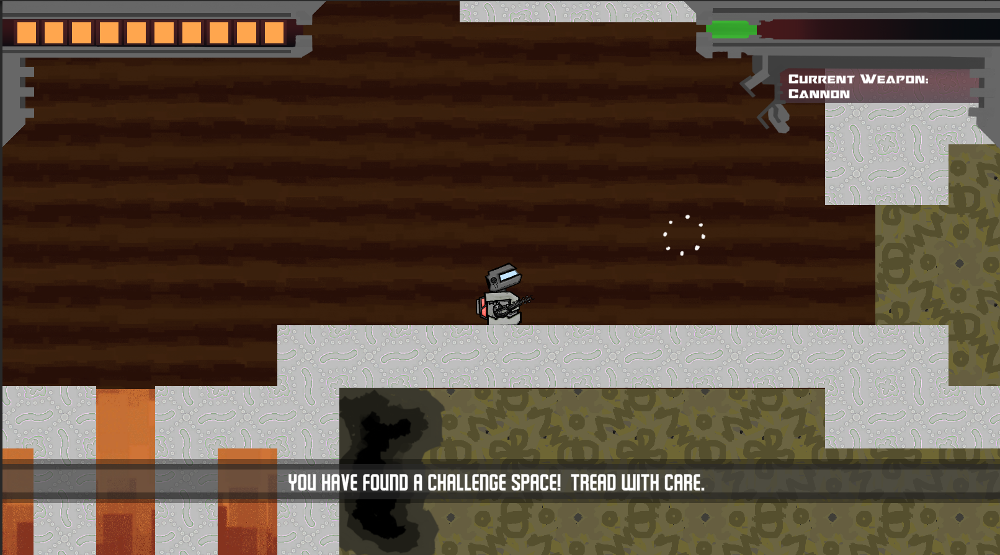
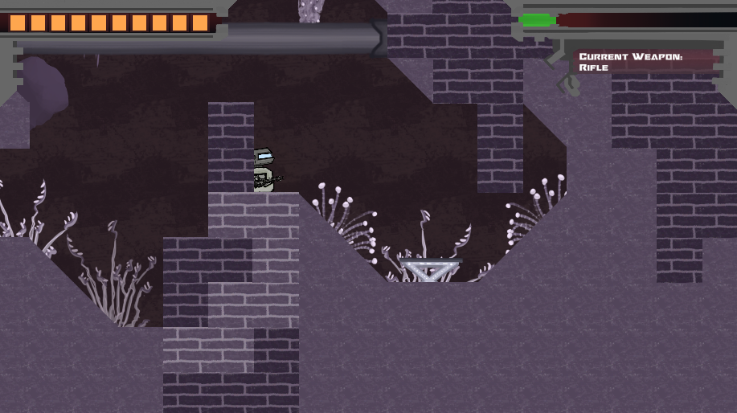
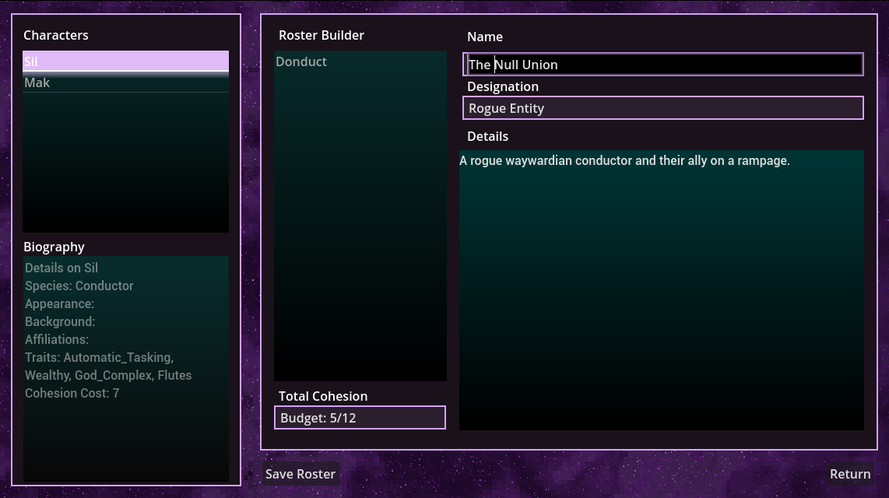
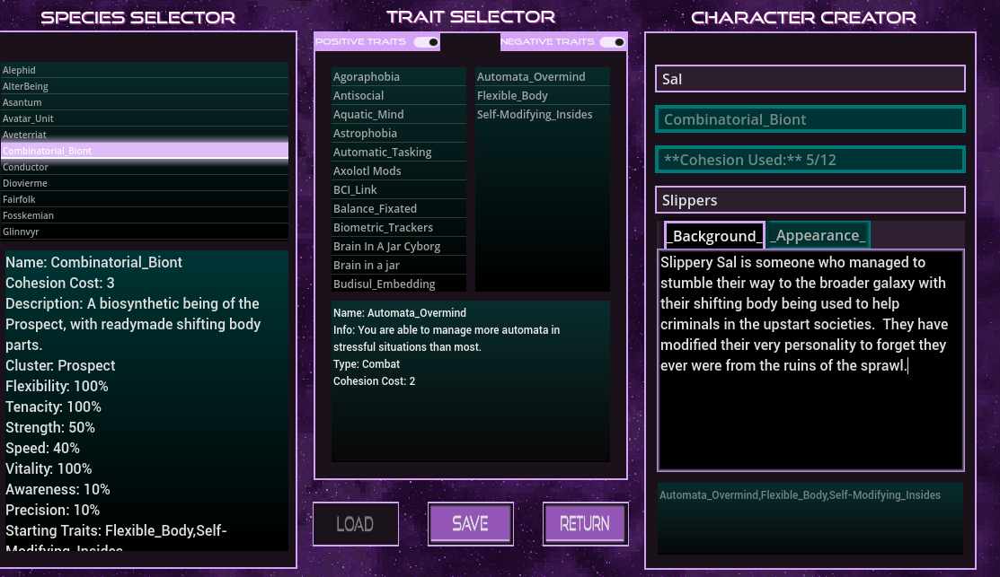
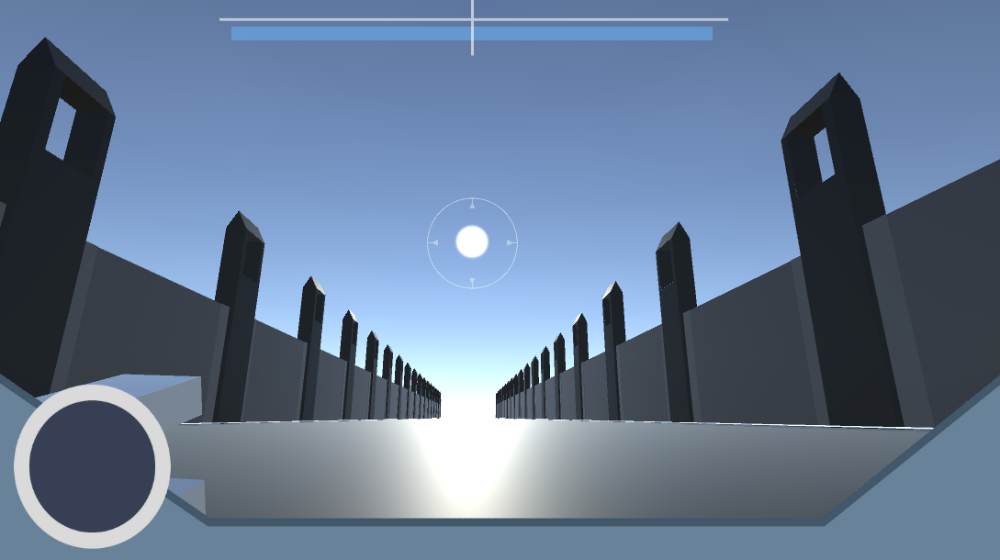
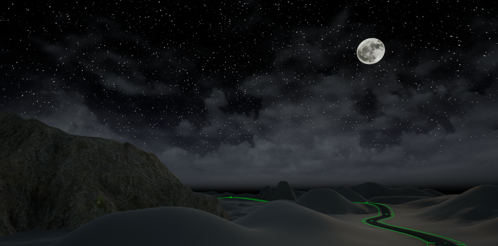

Knock Back!Knock Back! Feb 2024 - PresentFeb 2024 - Present Independent Game Project which makes use of Unity Game Engine centered around the core mechanic of knock back as your only means of movement. Level Design, 2D Game Art (including tilemaps built from scratch), UI design and setting up the game systems all have so far been involved in the process.
 A character builder project which used the Godot Game Engine to build out an elaborate character builder that also integrates Firebase's Realtime Databasing, JSON imported traits for the character creation and cross-platform authentication (as there is also a discord bot which uses information from the same cloud database) for an RPG experience. Cross-Platform support is inherently a feature of the project as it pull and stores data to a cloud database to be able to use the same information in a variety of contexts, be it as a discord bot or in a character creator.
 Thesis Project made for USC Games. Project Stranger is a fast paced arcade game with secret narrative layers the player uncovers through repeat play and noticing the hidden mechanics in each level.


Exospace is an ongoing independent game project that utilizes Adobe Illustrator, Photoshop and Unity 3D. It is an adventure game made from scratch with initial development done in Game Technologies.


I have worked on some 3D projects as well!
 Here are some of the interactive story projects I have worked on, accessible directly on this website!